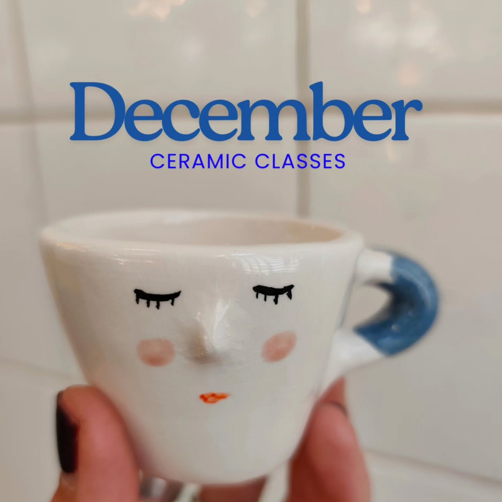
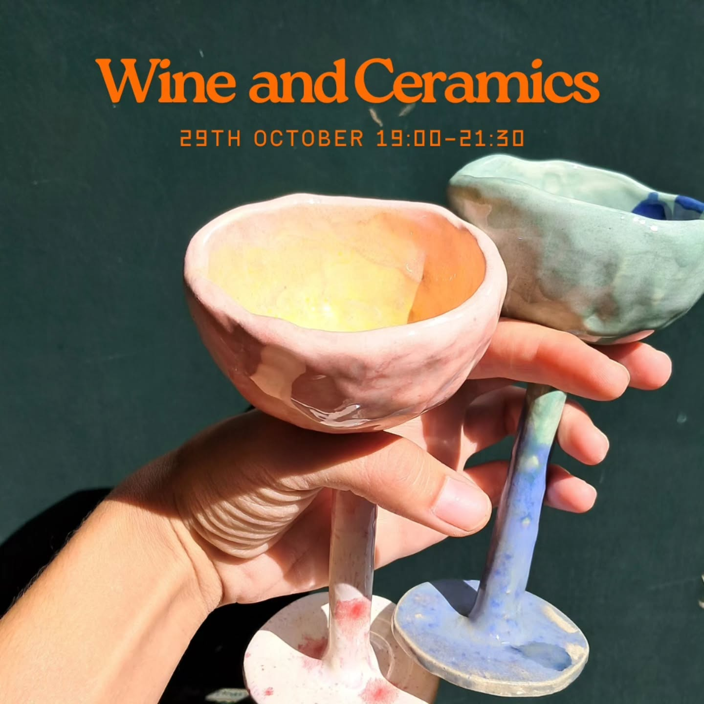

01 MOBILE390 × 844
POIAIS DE SÃO BENTO · LISBOA WORKSHOPS ↗
CA
CASA ANGELITA☰
CASA ANGELITA☰

A CREATIVE STUDIO IN LISBONMake room
for making.
Ceramics workshops, guest artists and moments around the table.
EXPLORE WORKSHOPS ↗COME AS YOU AREChoose your kind
Choose your kind
of making.
Find current dates and booking details on Meetup.

Ceramics workshops
See upcoming sessions ↗

Events & brunch
Follow announcements ↗

Guest artists
Ask the studio ↗